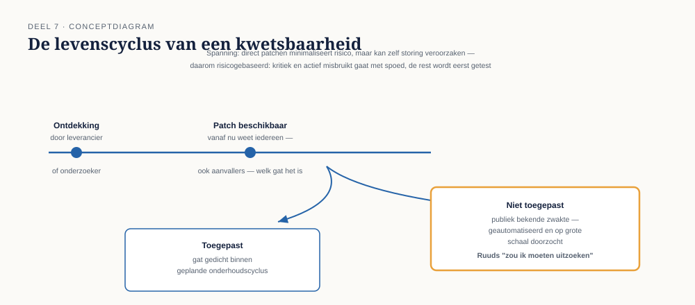

Deel 7 — Systemen en netwerken op hoofdlijnen
Reader · Ductus-cursus Informatiebeveiliging en privacy · niveau 1 (fundament) · deel 7 van 10
Casusvervolg: Ruuds plattegrond
Merel vraagt Ruud om iets simpels: een plattegrond van hoe de systemen van Meridiaan met elkaar verbonden zijn. Ruud tekent op een whiteboard een schets die begint met "het internet" aan de linkerkant en eindigt met "de database" aan de rechterkant, met daartussen een wirwar van dozen en pijlen die hij grotendeels uit zijn hoofd reconstrueert — er blijkt geen actueel, officieel diagram te bestaan.
Halverwege stopt hij en zegt: "Eerlijk gezegd weet ik niet zeker of dit systeem hier" — hij wijst naar een oud rapportagesysteem — "nog rechtstreeks met internet kan praten, of dat het via de rest van het netwerk moet. Dat zou ik moeten uitzoeken." Dat "zou ik moeten uitzoeken" is precies het probleem dat dit deel behandelt: als niemand zeker weet welke systemen elkaar kunnen bereiken, kun je onmogelijk beoordelen of een aanvaller die ergens binnenkomt, ver kan komen.
1. Zonering: niet alles hoort bij alles te kunnen praten
Zonering (ook wel netwerksegmentatie) is het opdelen van een netwerk in afzonderlijke gebieden, met gecontroleerde en beperkte verbindingen ertussen. Het tegenovergestelde — één groot, plat netwerk waarin elk systeem met elk ander systeem kan communiceren — is precies waarom de aanvalsfasering uit deel 2 (verkenning, eerste toegang, interne verkenning, het eigenlijke doel) zo gevaarlijk snel kan gaan: als een aanvaller eenmaal ergens binnen is, staat de rest van het netwerk wagenwijd open.
Een veelgebruikt model is de indeling in zones naar gevoeligheid en functie:
- Een DMZ (demilitarized zone) — systemen die vanaf internet bereikbaar moeten zijn, zoals het deelnemersportaal, staan hier apart van het interne netwerk. Als zo'n systeem wordt gecompromitteerd, betekent dat niet automatisch dat de aanvaller ook bij de interne systemen kan.
- Interne netwerksegmenten — bijvoorbeeld een apart segment voor het mutatiesysteem, een apart segment voor kantoorautomatisering (e-mail, bestandsdeling), en een apart, extra beveiligd segment voor de systemen die de gevoeligste gegevens bevatten.
- Beheersegmenten — de systemen en verbindingen die IT-beheerders gebruiken om andere systemen te beheren, vaak het gevoeligste segment van allemaal: wie hier controle over krijgt, krijgt potentieel controle over de rest.
Het principe achter zonering is hetzelfde principe als least privilege uit deel 5, nu toegepast op systemen in plaats van op mensen: een systeem zou alleen moeten kunnen communiceren met de systemen die het functioneel nodig heeft, niet met "alles, voor het geval dat later nodig is". Ruuds onzekerheid over het rapportagesysteem is precies een teken dat deze regel bij Meridiaan niet consequent is toegepast, of in elk geval niet is vastgelegd.
2. Patchen: de kwetsbaarheid die iedereen kent, behalve jij
Software bevat vrijwel onvermijdelijk fouten, en sommige daarvan zijn kwetsbaarheden die een aanvaller kan misbruiken. Als een leverancier zo'n kwetsbaarheid ontdekt (of erover wordt geïnformeerd), brengt die meestal een patch uit: een update die het gat dicht.
Het probleem is niet dat kwetsbaarheden bestaan — dat is, gegeven de complexiteit van moderne software, vrijwel onvermijdelijk. Het probleem ontstaat wanneer een patch beschikbaar is, maar niet wordt toegepast. Vanaf het moment dat een patch publiek wordt, weet iedereen — inclusief aanvallers — precies welke kwetsbaarheid hij verhelpt. Een niet-toegepaste patch is dus geen verborgen zwakte meer; het is een publiek bekende zwakte die aanvallers gericht kunnen zoeken en misbruiken, vaak geautomatiseerd en op grote schaal.
Dit verklaart waarom patchmanagement — het gestructureerd bijhouden van welke systemen welke patches nodig hebben, en het tijdig toepassen daarvan — een van de meest fundamentele beveiligingsmaatregelen is, ondanks (of juist dankzij) hoe onspannend het klinkt vergeleken met cryptografie of dreigingsanalyse. Een organisatie kan uitstekende zonering en sterke authenticatie hebben, en toch via één niet-gepatcht systeem alsnog worden binnengehaald.
Patchmanagement kent een reële spanning: patches direct toepassen zodra ze verschijnen, minimaliseert de tijd dat een systeem kwetsbaar is, maar een patch kan zelf ook een storing veroorzaken als hij ongetest wordt uitgerold op een kritiek systeem. De praktijk hanteert daarom vaak een risicogebaseerde aanpak: kritieke, actief misbruikte kwetsbaarheden worden met spoed gepatcht, ook buiten geplande onderhoudsvensters om, terwijl minder urgente patches eerst getest worden voordat ze breed worden uitgerold.
3. Hardening: de standaardinstelling is zelden de veilige instelling
Hardening is het proces waarbij een systeem, direct na installatie, wordt aangepast om onnodige risico's weg te nemen. De reden dat dit een apart onderwerp is: fabrieksinstellingen en standaardconfiguraties zijn doorgaans geoptimaliseerd voor gemak bij installatie, niet voor beveiliging.
Typische hardeningsmaatregelen: het uitschakelen van functies en diensten die niet worden gebruikt (elke actieve dienst is een potentieel aanvalspunt — dit heet het aanvalsoppervlak, en hardening is in essentie het verkleinen daarvan), het wijzigen van standaardwachtwoorden die bij installatie zijn ingesteld (een verrassend groot aantal incidenten wereldwijd is terug te voeren op systemen die nog met een fabrieksstandaardwachtwoord draaien), en het beperken van beheerrechten tot wie ze daadwerkelijk nodig heeft.
Hardening en patchen lijken op elkaar maar zijn niet hetzelfde: patchen lost bekende fouten in software op; hardening vermindert het aanvalsoppervlak door onnodige functionaliteit uit te schakelen en configuraties aan te scherpen, ongeacht of er sprake is van een specifieke bekende kwetsbaarheid.
4. Logging: het geheugen dat een organisatie nodig heeft
Logging is het vastleggen van gebeurtenissen binnen een systeem: wie logde wanneer in, welke wijzigingen werden gemaakt, welke verbindingen werden opgezet, welke fouten optraden. Logging dient meerdere doelen tegelijk:
- Detectie — ongebruikelijke patronen in logs (bijvoorbeeld een account dat midden in de nacht vanuit een ongebruikelijk land inlogt) kunnen een aanval vroegtijdig signaleren.
- Forensisch onderzoek — na een incident is logging vaak het enige middel om te reconstrueren wat er precies is gebeurd, hoe ver een aanvaller is gekomen, en welke gegevens mogelijk zijn geraakt. Dit wordt in deel 9 en deel 19 (het datalek) cruciaal: zonder goede logging is het bijna onmogelijk om de omvang van een incident betrouwbaar vast te stellen — en die vaststelling bepaalt weer of, en hoe, een datalek gemeld moet worden.
- Aantoonbaarheid — logging is een directe toepassing van de rode draad uit deel 1: een maatregel kan aanwezig zijn ("we hebben toegangscontrole"), maar zonder logging is ze niet aantoonbaar werkend ("wanneer is dat voor het laatst getest, en wie heeft wanneer ingelogd").
Logging kent ook een privacydimensie die niet over het hoofd mag worden gezien: uitgebreide logging van gebruikersgedrag is zelf een verwerking van persoonsgegevens (zeker als het om identificeerbare medewerkers of deelnemers gaat) en moet daarom aan dezelfde AVG-beginselen uit deel 3 voldoen — met name doelbinding en opslagbeperking. Dit is exact het spanningsveld dat in deel 1 al werd aangestipt: meer logging is niet automatisch beter, want het is zelf ook een verwerking die gerechtvaardigd moet zijn.
5. Back-ups: de 3-2-1-regel
Een back-up is een kopie van gegevens, bedoeld om herstel mogelijk te maken na verlies, corruptie, of — zoals in deel 2 besproken — ransomware. Een veelgebruikte vuistregel voor een robuuste back-upstrategie is 3-2-1:
- 3 kopieën van de data in totaal (de productiedata plus minstens twee back-ups).
- 2 verschillende soorten opslagmedia, om te voorkomen dat één type storing (bijvoorbeeld een falende schijfserie) alle kopieën tegelijk raakt.
- 1 kopie op een andere locatie (offsite), zodat een lokale calamiteit — brand, overstroming, maar ook een ransomware-aanval die zich door het hele lokale netwerk verspreidt — niet ook de back-up vernietigt.
Een detail dat in deel 2 al werd genoemd en hier explicieter wordt: een back-up beschermt tegen verlies van beschikbaarheid en integriteit (je kunt herstellen naar een eerdere, intacte staat), maar niet tegen verlies van vertrouwelijkheid — als gegevens al zijn gestolen (dubbele afpersing), verandert een back-up daar niets aan. Bovendien geldt: als de back-up zelf binnen hetzelfde, ongesegmenteerde netwerk staat als de productieomgeving, kan ransomware die zich lateraal verspreidt (zie zonering, paragraaf 1) ook de back-up zelf versleutelen — wat de 3-2-1-regel met de offsite-eis expliciet probeert te voorkomen.
Minstens zo belangrijk als het maken van back-ups is het testen van herstel: een back-up waarvan nooit is geprobeerd hem daadwerkelijk terug te zetten, is een aanname, geen zekerheid — weer een toepassing van de rode draad uit deel 1. Dit onderwerp krijgt in deel 21 (niveau 2, continuïteit en herstel) een volledige behandeling.
6. Endpointbeheer
Een endpoint is elk apparaat waarmee een gebruiker toegang krijgt tot systemen en gegevens: een laptop, een smartphone, soms zelfs een gedeeld werkstation. Endpoints zijn om een simpele reden een aantrekkelijk doelwit: het zijn de apparaten waarmee mensen — de "ontwerpvariabele" uit deel 2 — dagelijks interacteren, en dus de plek waar phishing, kwaadaardige bijlagen en andere social-engineering-aanvallen het eerst landen.
Endpointbeheer omvat maatregelen zoals: verplichte versleuteling van laptops (zodat een gestolen laptop, zoals in opdracht 6.1, geen toegang tot leesbare data geeft), automatische patching en updates, beveiligingssoftware die verdacht gedrag detecteert, en het vermogen om een verloren of gestolen apparaat op afstand te vergrendelen of te wissen. Bij BYOD (bring your own device — het gebruik van privéapparaten voor werk) ontstaat een extra spanningsveld tussen beheer door de organisatie en privacy van de medewerker, dat niet in dit deel wordt opgelost maar wel als aandachtspunt wordt gemarkeerd — het raakt zowel beveiliging (kan de organisatie het apparaat voldoende beveiligen) als privacy (welke controle heeft de organisatie dan over privégegevens op datzelfde apparaat).
7. Vanuit welk niveau moet je dit kunnen beoordelen?
Dit deel behandelt, in lijn met de afbakening uit deel 1, geen van deze onderwerpen tot op configuratieniveau — hoe je een firewall daadwerkelijk instelt of een patchproces technisch inricht, blijft buiten de hoofdcursus (zie de technische elective). Wat je wel moet kunnen: bij elk van deze zes onderwerpen de juiste vraag stellen. Bestaat er een actuele plattegrond van de systemen en hun verbindingen — of moet iemand, zoals Ruud, het live reconstrueren? Is er een patchproces, en hoe snel wordt een kritieke kwetsbaarheid toegepast? Zijn systemen gehard, of draaien ze nog op fabrieksinstellingen? Wordt er gelogd, en is die logging zelf weer AVG-conform? Is de 3-2-1-regel toegepast, en is herstel ooit getest? En hoe worden endpoints beheerd?
Ruuds "dat zou ik moeten uitzoeken" is, in het licht van dit deel, geen falen — het is precies het eerlijke antwoord dat nodig is voordat een organisatie kan beginnen met verbeteren. De volgende stap, die in deel 10 samenkomt in de capstone, is dat zulke antwoorden gedocumenteerd en aantoonbaar worden gemaakt, in plaats van uit iemands hoofd gereconstrueerd op een whiteboard.

